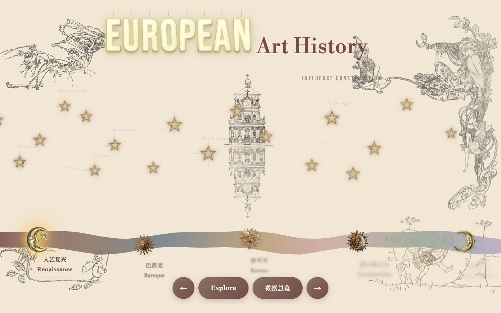

团队项目 · React / TypeScript / ECharts欧洲艺术承续展以 1400–1850 年欧洲艺术史为主线，把五个时期的交互展览与数据分析整合到同一个网站。团队整理了 100 件跨媒介策展样本，以时间曲线、技法指纹和数据矩阵呈现作品之间的联系。
移动应用 · React Native / FigmaMyGarden围绕数字花园设计互动体验。Water 页面用浇水动画反馈操作，Relax 页面用呼吸动画引导练习节奏。界面素材在 Figma 中制作并导出为 SVG，接入 React Native。